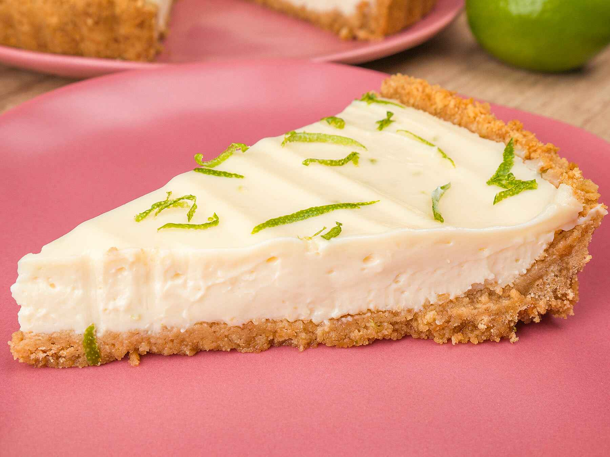
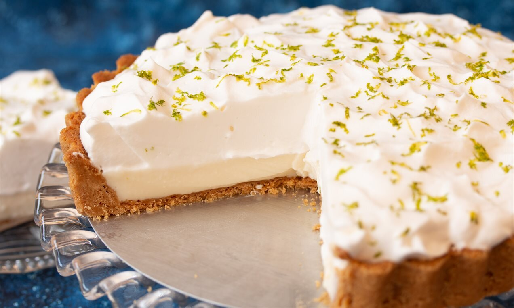
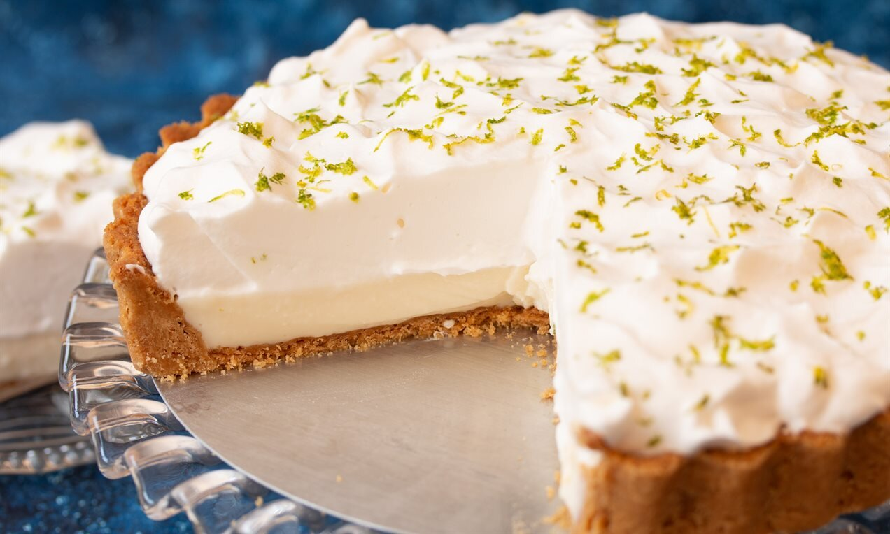
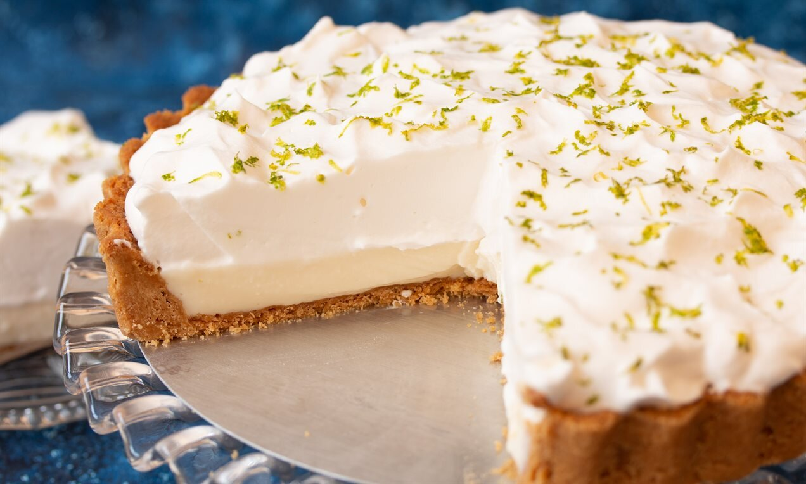

 


PRECISA DE UM TUTORIAL VISUAL?
CLIQUE
Preparo
40 minutos
Rendimento
15 porções
Modo de Preparo
Massa
- Triture o biscoito de maisena em um liquidificador ou processador.
- Junte a margarina e bata mais um pouco.
- Despeje a massa em uma forma de fundo removível (27cm de diâmetro).
- Com as mãos, espalhe os biscoitos triturados no fundo e nas laterais da forma, cobrindo a área forma uniforme.
- Leve ao forno médio (180ºC), pré-aquecido, por aproxidamente 10 minutos.
Recheio
- Bata todos os ingredientes no liquidificador (exceto as raspas de limão) até obter um creme liso e firme.
- Recheie a massa já assada e leve à geladeira por 30 minutos.
Cobertura
- Bata as claras em neve e acrescente o açúcar.
- Mistura até obter um ponto de suspiro e leve ao forno até dourar.
- Desenforme a torta (sem retirar o fundo falso), despeje a cobertura e acrescente as raspas de limão.
Ingredientes
Massa
- 200g de biscoito de maisena
- 150g de margarina
Recheio
- 1 lata de leite condensado (395g)
- 1 caixa de creme de leite (200g)
- Suco de 4 limões
- Raspas de 2 limões
Cobertura
- 3 ou 4 claras de ovo
- 3 colheres de sopa de açúcar
- Raspas de 2 limões para decorar